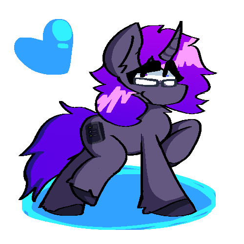

system64.dev - under construktion!!
i'm sophie (she/her they/them), i'm 21 demipan enby transfem, and a linux system and slight network administrator.
i draw pastel horses sometimes, i also write code on a very sometimes. though i primarily do sysad anymore...
this is just a placeholder page the actual website wont be this bad

its me!!!!